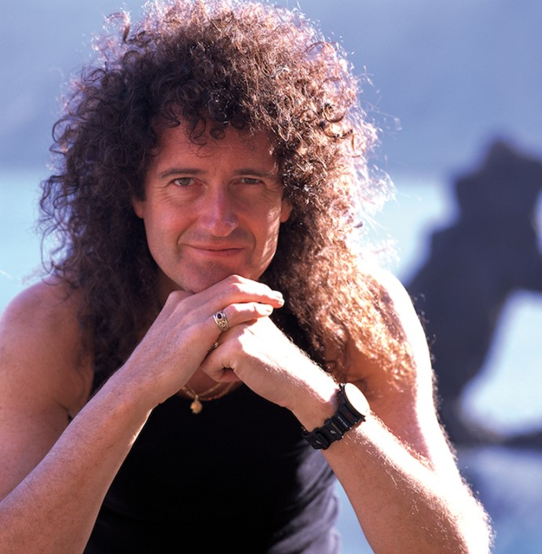

Conozcan a los grandes músicos que integran la banda:
| FREDDIE MERCURY | BRIAN MAY | ROGER TAYLOR | JOHN DEACON |
|---|---|---|---|
|  | |||
| (5/09/1946, Zanzíbar - 24/11/1991, Londres) | (19/07/1947, Londres) | (26/07/1949, Norfolk) | (19/08/1951, Leicester) |
| Vocalista - Compositor - Pianista | Guitarrista - Compositor - Vocalista | Baterista - Compositor - Vocalista | Bajista - Compositor |
| MAS INFO | MAS INFO | MAS INFO | MAS INFO |